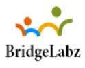

At BridgeLabz, we are a techie Community of
- Technologists
- Thinkers
- Builders
Working together to keep the Tech Employability of Engineeers alive and accessible, so Tech Companies worldwide can get contributors and creators for Technology Solutions. We Believe this act of human collaboration across an employability
platform is essential to individual growth and our collective future.
About Us
Bridgelabz is an AWS recognised incubator and is solely focused on solving tech employability. Over the last 5 years, it has worked with 500+ top tech companies and 2500+ engineers have been hired from Bridgelabz. It has labs in Mumbai
and Bangalore. It has partnered with over 500 companies, including Yatra, Capgemini, Meru Cabs, LafargeHolcim, JDA, UrbanLadder, Fullerton India, and RBL bank. Bridgelabz recently won Business World Techtor Award 2020 and secured 2nd
position at Global Edtech Startup Awards 2019, India. Also, was selected by the Maharashtra state government as Top 100 Startups 2019. More than 350+ learners placed in last 6 months despite covid downturn while most organizations
were not hiring or were laying off!